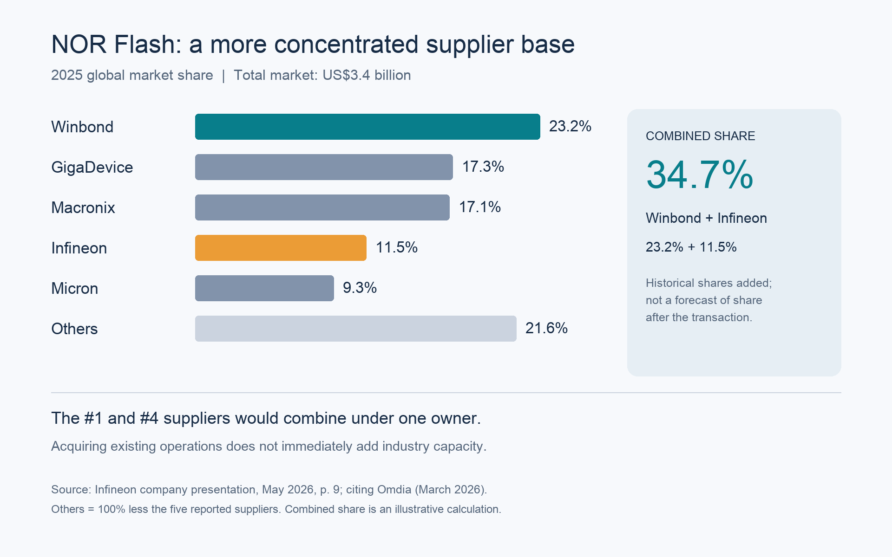

Ian Chang · 存檔：2026-10-03
Facebook 原帖 · LinkedIn 全文 · LinkedIn 分享貼文
Infineon 出售記憶體業務：資源聚焦與 NOR 產業整合 📌 【結論】Infineon 出售 NOR Flash 與 F-RAM，反映半導體業者對投資優先順序的重新選擇。在 NOR 供需已偏緊的背景下，華邦擴大規模，可能同時帶來更強的個別競爭者與更集中的供給結構；對其他業者的影響，需要把競爭實力與整體價格環境一起看。 🤝 華邦承接既有業務，Spansion 名稱將重新啟用 Infineon 與華邦於 2026 年 9 月 16 日宣布簽約，華邦將以全現金取得 NOR Flash 與 F-RAM 事業的 100% 股權，基礎交易價格為 11.2 億美元，仍須依約調整。交易預計 2027 年下半年完成，尚待主管機關核准等交割條件。 交割後，標的公司將重新使用 Spansion 名稱，以美國為總部、獨立營運。此次出售的是 NOR Flash 與 F-RAM 事業，Infineon 仍保留其他特殊記憶體產品。 ⚡ Infineon 把新增投資集中到 AI 供電等成長領域 AI 資料中心用電增加，從電力轉換、伺服器電源到處理器供電，都需要更多功率半導體與控制晶片。Infineon 已把 AI 資料中心供電列為最重要的成長驅動力，並將 2026 會計年度投資預算從 22 億歐元提高到 27 億歐元，加速相關產能建置。這是全公司投資預算，包含廠房設備、其他無形資產及資本化開發支出，不能全部視為 AI 專屬支出。 我的理解是，NOR 與 F-RAM 即使已有成熟技術和客戶，若要維持長期競爭力，仍需要投入研發、新產品、客戶認證及供應能力。當其他業務出現更強的投資需求，出售記憶體業務，便能讓資金與管理資源更集中。這反映的是業務在集團內的相對優先順序，不能因此推論 NOR 或 F-RAM 本身沒有前景。 🧩 同一項業務，在不同公司手上有不同的價值 對 Infineon，記憶體需要與 AI 電源等業務競爭資源；對原本就專注記憶體的華邦，這些產品、研發人才與客戶關係，則可能補強既有核心能力。 因此，賣方減少資源分散、買方擴大核心業務，兩邊的選擇可以同時合理。至於互補能否轉成更好的產品、成本與報酬，仍取決於整合結果。 📊 高容量 NOR 供給仍吃緊，新增產能尚未填補缺口 這筆交易發生時，NOR 市場正面臨需求增加、供給跟進較慢的局面。AI 伺服器與車用電子推升高容量 NOR 的需求，新增產能卻必須經過製程調整、良率提升與客戶驗證，難以立即填補缺口。 供需壓力也反映在報價上：高容量 NOR 的價格仍有上行壓力，中低容量產品則隨新增供給釋出，漲勢逐漸放緩。因此，目前的市場特徵是高容量產品供應尤其吃緊，不宜把所有 NOR 規格視為相同的行情。 這讓產業整合多了一層意義：當供給還無法迅速跟上需求，併購帶來的影響，就需要連同整體價格環境一起評估。 🔎 競爭者變強，與產業獲利環境改善，可以同時發生 華邦承接業務後，可能形成規模更大、產品更完整的競爭者；但收購既有業務本身沒有立即增加全球產能。我的假設是，如果整合後的供應商更重視投資報酬、維持審慎擴產，市場集中度提高就可能支撐價格，使包括旺宏在內的既有業者共同受惠。客戶為了維持獨立第二來源，也可能重新調整採購配置。這些可能性仍需要實際行為驗證。 因此，觀察這件事，我會把產業整合後的投資意願、客戶採購與供需環境一起看。單看某一家競爭者變大，不足以判斷其他業者的獲利一定受到壓縮；在供給吃緊的市場，業者即使沒有增加市占，也可能因價格與產品組合改善而受益。 資料來源： https://www.winbond.com.tw/hq/about-winbond/news-and-events/news/news00590.html?__locale=zh_TW https://www.infineon.com/press-release/2026/infpr202609-140 https://www.infineon.com/press-release/2026/infxx202602-042 https://www.infineon.com/press-release/2026/infpr202608-125 https://www.infineon.com/content/dam/infineon/row/public/documents/corporate/press/2026/infpr202608-125e.pdf https://www.trendforce.com.tw/presscenter/news/20260914-13233.html
